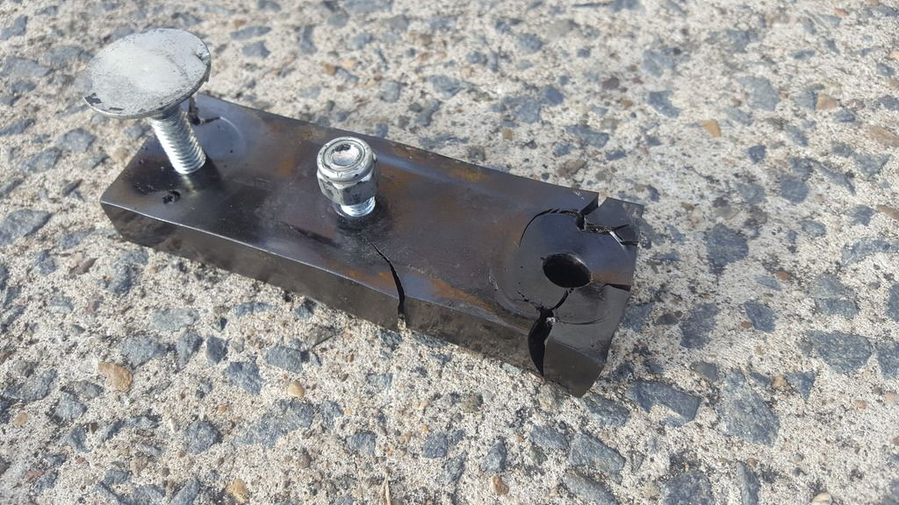

-
I was just browsing Jason's Z31Parts site and read this announcement:
I am curious as to what the previous versions QC problems were and are they of a concern? What makes the v3.0 different from the earlier versions? I don't know which version I have, but I purchased my tranny mount this time last year and is still in the box, as is everything else I have for the car.2-11-09 - The next batch of poly transmission mounts are finally available. If you have been waiting for one, they are now available and I have 20 of the newest and best version so far (v3.0) in stock. At this point I believe that the supplier QC issues I had been having with transmission mounts have been resolved.

1986 300ZX Turbo…sold
1990 Skyline GT-R…new money pit
2014 Juke Nismo RS 6-speed…daily -
On a side note, did you buy the poly boots off me?
-
on a few that i have installed the stud is not seated in the poly very well, so when you apply moderate pressure to install the mount to the transmission cross member, the stud rotates inside the polyurethane. if i were building them i would weld the stud onto a rod the length of the poly.Nearly all men can stand adversity, but if you want to test a mans character make him a moderator. -
Yesvagabond wrote: On a side note, did you buy the poly boots off me?
1986 300ZX Turbo…sold
1990 Skyline GT-R…new money pit
2014 Juke Nismo RS 6-speed…daily -
This is the kind of thing you can ask in an e-mail… I doubt anyone but me would know anyway…
When the version number on any part I make gets incremented, it means it went through a revision of some kind (big or small) and needed some sort of differentiation from the previous parts (mostly so I can keep track of them better).
As far as failures, I have had 4 total out of some 90+ sold. Those failed were all from the very first batch. Some of the other very early versions had manufacturing issues leading to a less than ideal bond to the embedded bolts. Some also had incorrect bolt lengths, the list goes on. I have and will continue to replace those few if they fail. As I changed the spec for the newer version (adding a larger washer welded to the bolt, as well as specifying the depth of the bolt head and washer in order to keep the urethane under compression (which was called out on the original drawing but never verified until recently), the most recent batch was actually the 3rd "remake" of the batch until they could build them 100% to my new spec, hence the post about it on the website. The QC issues I speak of there are new… they were very apparent when I received the orders CLEARLY not built to spec. In the future these problems won't happen.
In the future I would like to have a page on each product linking to the instructions, revision history, and common failure modes. Like all production parts, revisions will be made as time goes on; generally in the past I have simply kept them to myself.
Jason -
[quote]NissanEgg wrote:PM Gary about the boots.Originally posted by vagabond -
PM sent. -
[quote]vagabond wrote: [quote=NissanEgg]Originally posted by vagabondUm, :-? . Who is supposed to be getting or sending a PM? If it was from 1artworkz, I haven't got one yet.Originally posted by vagabond
As for my first post, I was just curious. I didn't mean to sound like I was bashing your product. I was just wanting to know if I should be aware of something or be on the lookout for a particular problem with my or any poly trans mount.
I will continue to buy your products as they come out. 8)
1986 300ZX Turbo…sold
1990 Skyline GT-R…new money pit
2014 Juke Nismo RS 6-speed…daily -
NissanEgg wrote:
Um, :-? . Who is supposed to be getting or sending a PM?
My bad. I PM'd a suggestion to Jason about the studs. I do not make the trans. mount.
Ball Joint Dust Boots are being replaced, no charge.
Jason gave me a list including email address of all those that purchased them for him.
Using the email list I sent out a notice that I was replacing them with a newer version
that has a metal ring in the seat that prevents the boot from lifting off and exposing the
ball joint.
For those that ordered red ones and have responded to my email message, I sent your
replacements out today via 2 day Priority.
Those that ordered Black will receive theres the end of next week.
This is a list (Whitlow, Jenkins, Coleman, Gardner, Poll) of people that have not replied to
my email. They will be getting a the replacement notice by US Postal Service. -
I'm digging this up again because this issue almost delayed the release of my car on the first test drive after my build was complete. The gear stick was slopping around all over the place between shifts; got it back on the hoist and saw this.

The car hadn't even been driven. This mount was just installed and sat there for about 3 years. What's the story on these now? Is this a dead and gone part or what? I'd love my free one! lol My engineer buddy seems to think because there are no crush tube inserts for the bolts is why this happened and perhaps inferior polyurethane.
-
Responsetype makes a trans mount. better than the one you have pictured.
Originally posted by 300zxt View Post -
Wow, a vendor who gets his customers to do his R&D. -
I'm just glad we found it driving around the block on the test drive and not launching hard at 6,000rpm! lol

Copyright © 2006–. All rights reserved. Privacy Policy